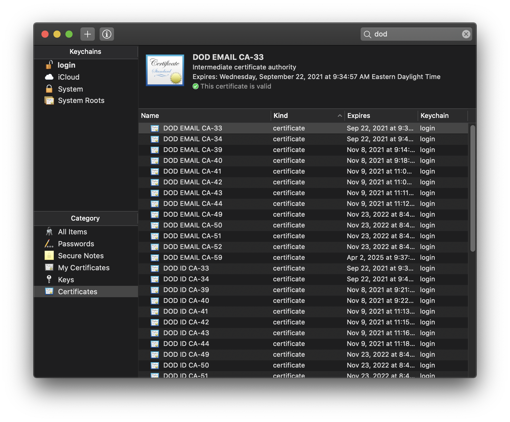

CAC on macOS
7 Aug 2020
Unfortunately http://militarycac.com is an unruley mess, confusing, and outdated in places. Below is basically Step 5 from militarycac.com instructions.

- You do not need any software (e.g., CAC enabler) to use the CAC and SCR3310v2 reader in macOS 10.15.5
- Go to keychains and delete all DOD keys (select and delete)
- Note: keychains no longer shows the CAC PKI cert like it use too, but that is ok, it will still work
- Then download these and double clicking on them. Note, these are they same as downloading the AllCerts.zip and installing those certs.
- https://militarycac.com/maccerts/AllCerts.p7b
- https://militarycac.com/maccerts/RootCert2.cer
- https://militarycac.com/maccerts/RootCert3.cer
- https://militarycac.com/maccerts/RootCert4.cer
- https://militarycac.com/maccerts/RootCert5.cer
- You need to manually trust the DoD Root CA 2, 3, 4, & 5 certificates.
- Double click each of the DoD Root CA certificates, select the triangle next to Trust, in the When using this certificate: select Always Trust
- The red X should change to a blue plus
- Make sure you have the following certs:
DOD EMAIL CA-33 through DOD EMAIL CA-34
DOD EMAIL CA-39 through DOD EMAIL CA-44
DOD EMAIL CA-49 through DOD EMAIL CA-52
DOD EMAIL CA-59
DOD ID CA-33 through DOD ID CA-34
DOD ID CA-39 through DOD ID CA-44
DOD ID CA-49 through DOD ID CA-52
DOD ID CA-59
DOD ID SW CA-35 through DOD ID SW CA-38
DOD ID SW CA-45 through DOD ID SW CA-48
DoD Root CA 2 through DoD Root CA 5
DOD SW CA-53 through DOD SW CA-58
DOD SW CA-60 through DOD SW CA-61NGA
- Install citrix workspace for mac
- login to https://mydesktop.nga.mil/
- Use the email cert to login
References
- http://militarycac.com